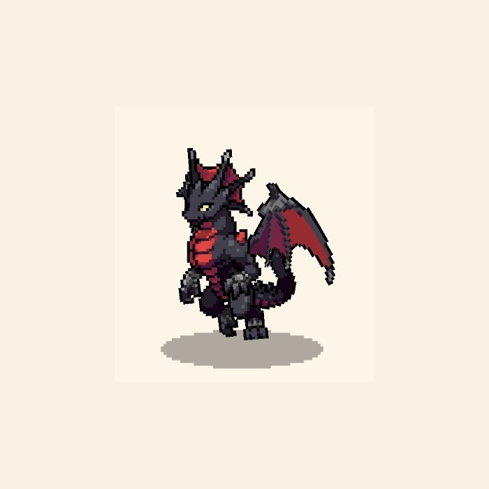

BASIC DATA
基本情報
- レア度
- Epic
- 属性
- 風
- 役割
- 物理アタッカー
- 固有アビリティ
- 名射手
- 効果
- スキルの命中率が1.3倍で適用される。
- 入手方法
- 交配
- 孵化時間
- 4時間15分 海外Wiki
- 交配条件
- 調査中
- 交配工程の時間
- 調査中

ゲーム内スクリーンショットよりDRAGON FILE 001
高い攻撃・速度と、命中率を補助する固有アビリティを持つ物理型ドラゴン。Project Dの個別研究ページ第1号。
BASIC DATA
F2P DEVELOPMENT
25時間30分は「4時間15分 × 6体」の単純合計です。交配にかかる時間、狙った個体が生まれる確率、待機ロスは含みません。
MEASURED STATS
ゲーム内で確認したLv.50の数値です。
| 育成段階 | HP | 攻撃 | 防御 | 魔法 | 抵抗 | 速度 |
|---|---|---|---|---|---|---|
| ★1 | 1,008 | 1,093 | 758 | 1,008 | 758 | 923 |
| ★5 | 1,094 | 1,186 | 821 | 1,094 | 821 | 1,001 |
JEWEL GUIDE
スキル構成によって役割が変わるため、宝珠ごとの実戦データを集めてから掲載します。
PROJECT D REVIEW
EpicのためLegendaryより重ねやすく、★5まで育成できた場合は攻撃と速度を両立できます。固有アビリティ「名射手」は命中を安定させるため、回避の高い相手への起用価値があります。
総合順位は交配条件・出現率・完成日数を確認後に確定します。
LAB NOTE